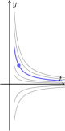

7 Équations différentielles linéaires
Dans ce chapitre, \(\mathbb{K}\) désigne \(\mathbb{R}\) ou \(\mathbb{C}\) et \(I\) est un intervalle non vide de \(\mathbb{R}\).
7.1 Équations différentielles linéaires d’ordre \(1\)
Définition 7.1 (Équation différentielle linéaire d’ordre \(1\)) On appelle équation différentielle linéaire d’ordre \(1\) une équation de la forme
\[ \forall t \in I,\quad y'(t) + a(t)y(t) = b(t) \tag{E1} \]
où \(t \mapsto a(t)\) (le coefficient) et \(t \mapsto b(t)\) (le second membre) sont des fonctions de \(I\) dans \(\mathbb{K}\), et \(t \mapsto y(t)\) est la fonction inconnue.
Remarque 7.1. La variable \(t\) et le nom de la fonction inconnue \(y\) sont muets. Par exemple, les équations
\[ \forall t \geqslant 0,\quad \frac{dU}{dt} + \frac{1}{RC}U(t) = 0 \]
et
\[ \forall x \geqslant 0,\quad y'(x) + \frac{1}{RC}y(x) = 0 \]
représentent la même équation différentielle.
Définition 7.2 (Solution) Une solution de \((E1)\) est une fonction \(y:I \to \mathbb{R}\) dérivable, telle que
\[ \forall t \in I,\ y'(t) + a(t)y(t) = b(t). \]
Remarque 7.2. Une solution de \((E1)\) hérite de la régularité de \(a\) et \(b\) sur \(I\). Par exemple, si \(a\) et \(b\) sont de classe \(C^{+\infty}\), l’égalité
\[ \forall t \in I,\ y'(t) = -a(t)y(t) + b(t) \]
montre que \(y'\) est continue sur \(I\), donc \(y\) est de classe \(C^{1}\) sur \(I\) par somme et produit. La même égalité montre alors que \(y'\) est de classe \(C^{1}\) sur \(I\) i.e. que \(y\) est de classe \(C^{2}\) sur \(I\), etc.
Définition 7.3 (Équation homogène associée) On appelle équation homogène associée à (E1) l’équation différentielle
\[ \forall t \in I,\quad y'(t) + a(t)y(t) = 0. \tag{H1} \]
Proposition 7.1 (Ensemble des solutions de l’équation homogène) Si \(a\) est continue sur \(I\), l’ensemble des solutions de l’équation homogène (H1) est un \(\mathbb{K}\)-espace vectoriel de dimension \(1\), dont une base est \(t \mapsto e^{-A(t)}\) où \(A\) est une primitive de \(a\) sur \(I\).
Remarque 7.3. Autrement dit, l’ensemble \(\mathcal{S}_{(H1)}\) des solutions de (H1) sur \(I\) est
\[ \mathcal{S}_{(H1)}\{t \mapsto \alpha e^{-A(t)},\ \alpha \in \mathbb{K}\} \]
où \(A\) est une primitive de \(a\) sur \(I\).
Exemple 7.1 Résolution de l’équation différentielle
\[ \forall t>0,\quad ty'(t) + y(t) = 0. \]
L’équation se réécrit
\[ \forall t >0,\ y'(t) + \frac{1}{t}y(t) = 0. \]
Une primitive de \(t \mapsto \frac{1}{t}\) sur \(]0,+\infty[\) est \(t \mapsto \ln t\).
Donc les solutions sont les fonctions de la forme
\[ t \mapsto \alpha e^{-A(t)} = \alpha e^{-\ln(t)} = \frac{\alpha}{t},\quad \alpha \in \mathbb{K}. \]
Résoudre une équation homogène, c’est donc essentiellement un problème de calcule de primitive.
Proposition 7.2 (Structure de l’ensemble des solutions de l’équation complète) Si \(y_p\) est une solution particulière de l’équation (E1), alors les solutions de (E1) sont les fonctions de la forme \(y_p + y\) où \(y\) est une solution de l’équation homogène (H1).
Remarque 7.4. On dit que l’ensemble des solutions de (E1) est un espace affine dirigé par l’ensemble des solutions de (H1).
Exemple 7.2 Déterminer l’ensemble des solutions de l’équation différentielle
\[ \forall t>0,\quad ty'(t) + y(t) = 2t. \]
L’équation s’écrit
\[ \forall t >0,\ y' + \frac{1}{t}y = 2. \]
D’après l’exemple précédent, l’équation homogène associée a pour solutionsles fonctions de la forme \(t \mapsto \frac{\alpha}{t}\), \(\alpha \in \mathbb{R}\).
On remarque que \(t \mapsto t\) est une solution particuilère de l’équatoin complète.
Dons les solutions sont les fonctions de la forme
\[ y(t) = t + \frac{\alpha}{t},\quad \alpha \in \mathbb{K}. \]
Proposition 7.3 (Méthode de variation de la constante) La méthode de variation de la constante consiste à chercher une solution particulière de l’équation (E1) sous la forme \(y(t) = \alpha(t)e^{-A(t)}\), où \(A\) est une primitive de \(a\) sur \(I\) et \(\alpha\) est une fonction dérivable sur \(I\).
Exemple 7.3 A l’aide de la méthode de variation de la constante, déterminer une solution particulière de l’équation différentielle
\[ \forall x>0,\quad xy' - y = x^{2}e^{x}. \]
L’équation s’écrit
\[ \forall x>0,\ y' - \frac{1}{x}y = xe^{x}. \]
L’équation homogène associée a pour solutions \(x \mapsto \alpha x\) (une primitive de \(-\frac{1}{x}\) sur \(]0,+\infty[\) est \(-\ln(x)\)).
On cherche alors une solution particulière sous la forme \(y(x) = \alpha(x)x\), où \(\alpha\) est une fonction de classe \(C^{1}\) sur \(]0,+\infty[\). On a alors
\[ \forall x >0,\ y'(x) = \alpha'(x)x + \alpha(x), \]
de sorte que \(y\) est solution ssi
\[ \forall x>0,\ xy'(x) - y(x) = \alpha'(x)x^{2} = x^{2}e^{x}, \]
Il suffit donc que \(\alpha'(x)=e^{x}\), par exemple \(\alpha(x) = e^{x}\).
Une solution particulière de l’équation complète est donc \(y_p(x) = xe^{x}\).
Proposition 7.4 (Principe de superposition) Si \(y_1\) et \(y_2\) sont des solutions particulières des équations respectives \(y' + a(t)y = b_1(t)\) et \(y' + a(t)y = b_2(t)\), alors pour tout \(\alpha,\beta \in \mathbb{K}\), la fonction \(\alpha y_1 + \beta y_2\) est une solution particulière sur \(I\) de l’équation \(y' + a(t)y = \alpha b_1(t) + \beta b_2(t)\).
Théorème 7.1 (Théorème de Cauchy-Lipschitz) Si \(a\) et \(b\) sont continues sur \(I\) alors, pour tout \(t_0 \in I\) et \(y_0 \in \mathbb{K}\), le problème de Cauchy
\[ \begin{cases} \text{(E1)}\\ y(t_0) = y_0 \end{cases} \]
admet une unique solution sur \(I\).
Définition 7.4 (Courbe intégrale) Une courbe intégrale de l’équation \((E1)\) est le graphe d’une solution de \((E1)\).
Par chaque point \((t_{0},y_0) \in I \times \mathbb{R}\), il passe une unique courbe intégrale.

7.2 Systèmes différentiels linéaires homogènes à coefficients constants
Définition 7.5 (Système différentiel linéaire homogène à coefficients constants) Un système différentiel linéaire homogène à coefficients constants est un système du type
\[ \forall t \in I,\quad \begin{cases} x_1'(t) = a_{11}x_1(t) + \dots + a_{1n}x_n(t),\\ \vdots\\ x_n'(t) = a_{n1}x_1(t) + \dots + a_{nn}x_n(t), \end{cases} \tag{S} \]
où \(a_{ij} \in \mathbb{K}\).
Si on pose
\[ X(t) = \begin{pmatrix} x_1(t)\\ \vdots \\ x_n(t) \end{pmatrix} \quad\text{et}\quad A = (a_{ij})_{1 \leqslant i,j \leqslant n} \in \mathcal{M}_n(\mathbb{K}), \]
alors ce système s’écrit matriciellement
\[ X' = AX, \]
où, par définition, \(X' = \begin{pmatrix} x_1'\\ \vdots \\ x_n' \end{pmatrix}\).
Proposition 7.5 (Théorème de Cauchy-Lipschitz) Pour tout \(t_0 \in I\) et \(X_0 \in \mathcal{M}_{n,1}(\mathbb{K})\), le problème de Cauchy
\[ \begin{cases} \text{(S)}\\ X(t_0) = X_0 \end{cases} \]
admet une unique solution sur \(I\).
Proposition 7.6 (Structure de l’ensemble des solutions) L’ensemble des solutions de (S) sur \(I\) est un \(\mathbb{K}\)-espace vectoriel de dimension \(n\).
Exemple 7.4 Résolution pratique du système différentiel
\[ \begin{cases} x' = 2x - 3y,\\ y' = x - 2y. \end{cases} \]
Le système s’écrit \(X' = AX\) avec \(A = \begin{pmatrix} 2&-3\\ 1&-2 \end{pmatrix}\). Son polynôme caractéristique est
\[ P_A(X) = (X-2)(X+2) + 3 = X^{2} - 1 = (X-1)(X+1), \]
les valeurs propres sont \(1\) et \(-1\). Des vecteurs propres associés sont \(U_1 = \begin{pmatrix} 3\\ 1 \end{pmatrix}\) (pour \(1\)) et \(U_2 = \begin{pmatrix} 1\\ 1 \end{pmatrix}\) (pour \(-1\)). La matrice \(P = \begin{pmatrix} 3&1\\ 1&1 \end{pmatrix}\) diagonalise donc \(A\) : \(P^{-1}AP = \mathrm{diag}(1,-1)\). Les solutions du système sont
\[ X(t) = c_1 e^{t}U_1 + c_2 e^{-t}U_2, \]
soit
\[ \begin{cases} x(t) = 3c_1 e^{t} + c_2 e^{-t},\\ y(t) = c_1 e^{t} + c_2 e^{-t}, \end{cases} \quad c_1,c_2 \in \mathbb{K}. \]
Proposition 7.7 (Équation différentielle linéaire d’ordre \(2\) à coefficients constants) Soit \(a,b \in \mathbb{R}\). L’ensemble des solutions de l’équation différentielle linéaire
\[ y'' + ay' + by = 0 \tag{H} \]
est un \(\mathbb{R}\)-espace vectoriel de dimension \(2\). L’équation caractéristique associée à (H) est l’équation
\[ X^{2} + aX + b = 0. \tag{e} \]
Alors :
- si \((e)\) possède deux racines distinctes \(\lambda_1\) et \(\lambda_2\) dans \(\mathbb{K}\), les solutions de (H) sont de la forme
\[ \forall t \in \mathbb{R},\quad y(t) = c_1 e^{\lambda_1 t} + c_2 e^{\lambda_2 t},\quad c_1,c_2 \in \mathbb{R}, \]
- si \((e)\) possède une racine double \(\lambda\) dans \(\mathbb{K}\), les solutions de (H) sont de la forme
\[ \forall t \in \mathbb{R},\quad y(t) = c_1 e^{\lambda t} + c_2 t e^{\lambda t},\quad c_1,c_2 \in \mathbb{R}, \]
- si \((e)\) possède deux racines complexes conjuguées \(\lambda = r + i\omega\) et \(\bar{\lambda} = r - i\omega\), les solutions de
- sont de la forme
\[ \forall t \in \mathbb{R},\quad y(t) = e^{rt}\bigl(\alpha\cos(\omega t) + \beta\sin(\omega t)\bigr),\quad \alpha,\beta \in \mathbb{R}. \]
Remarque 7.5. Autrement dit, dans le premier cas, une base de l’ensemble des solutions est \((t \mapsto e^{\lambda_1 t},\ t \mapsto e^{\lambda_2 t})\) ; dans le deuxième cas, \((t \mapsto e^{\lambda t},\ t \mapsto te^{\lambda t})\) ; etc.
Remarque 7.6. On peut utiliser les mêmes techniques pour étudier une équation différentielle scalaire d’ordre \(n\) du type
\[ y^{(n)} - a_{n-1}y^{(n-1)} - \dots - a_1 y' - a_0 y = 0,\quad a_0,\dots,a_{n-1} \in \mathbb{K}, \]
en posant
\[ X = \begin{pmatrix} y\\ y'\\ \vdots\\ y^{(n-1)} \end{pmatrix} \quad\text{et}\quad A = \begin{pmatrix} 0&1&0&\dots&0\\ \vdots&\ddots&\ddots&\ddots&\vdots\\ \vdots&&\ddots&\ddots&0\\ 0&\dots&\dots&0&1\\ a_0&a_1&\dots&\dots&a_{n-1} \end{pmatrix}. \]
7.3 Équations différentielles linéaires d’ordre \(2\)
Définition 7.6 (Équation différentielle linéaire d’ordre \(2\)) Une équation différentielle linéaire d’ordre \(2\) est une équation de la forme
\[ \forall t \in I,\quad y''(t) + a(t)y'(t) + b(t)y(t) = c(t) \tag{E2} \]
où \(a\), \(b\) et \(c\) sont des fonctions de \(I\) dans \(\mathbb{K}\).
Définition 7.7 (Équation homogène associée) L’équation homogène associée à (E2) est l’équation
\[ \forall t \in I,\quad y''(t) + a(t)y'(t) + b(t)y(t) = 0. \tag{H2} \]
Théorème 7.2 (Théorème de Cauchy-Lipschitz) Si les fonctions \(a\), \(b\) et \(c\) sont continues sur \(I\) alors, pour tout \(t_0 \in I\) et pour tout \(y_0, v_0 \in \mathbb{K}\), le problème de Cauchy
\[ \begin{cases} \text{(E2)}\\ y(t_0) = y_0,\\ y'(t_0) = v_0 \end{cases} \]
admet une unique solution sur \(I\).
Remarque 7.7. Interprétation graphique du théorème de Cauchy-Lipschitz.
Proposition 7.8 (Ensemble des solutions de l’équation homogène) L’ensemble des solutions de l’équation homogène (H2) est un \(\mathbb{K}\)-espace vectoriel de dimension \(2\).
Remarque 7.8. Contrairement aux équations d’ordre \(1\), il n’existe pas de méthode au programme pour déterminer une base de solutions de (H2).
Exemple 7.5 Déterminer l’ensemble des solutions de l’équation
\[ \forall x>0,\quad x^{2}y''(x) + xy'(x) - y(x) = 0 \]
en cherchant des solutions particulières sous la forme \(x \mapsto x^{\alpha}\), \(\alpha \in \mathbb{R}\).
Si \(y(x) = x^{\alpha}\), alors \(y'(x) = \alpha x^{\alpha-1}\) et \(y''(x) = \alpha(\alpha-1)x^{\alpha-2}\), donc
\[ x^{2}y''(x) + xy'(x) - y(x) = \bigl(\alpha(\alpha-1) + \alpha - 1\bigr)x^{\alpha} = (\alpha^{2}-1)x^{\alpha}. \]
La fonction \(x \mapsto x^{\alpha}\) est donc solution ssi \(\alpha = \pm 1\). Les fonctions \(x \mapsto x\) et \(x \mapsto \frac{1}{x}\) forment une base de l’ensemble des solutions (leur wronskien en \(1\) vaut \(-2 \neq 0\)), donc les solutions sur \(]0,+\infty[\) sont
\[ y(x) = Ax + \frac{B}{x},\quad A,B \in \mathbb{K}. \]
Proposition 7.9 (Structure de l’ensemble des solutions) Si \(y_p\) est une solution particulière de l’équation (E2), alors les solutions de (E2) sont les fonctions de la forme \(y_p + y\) où \(y\) est une solution de l’équation homogène (H2) associée à (E2).
Remarque 7.9. Contrairement aux équations d’ordre \(1\), il n’existe pas de méthode au programme pour déterminer une solution particulière de (E2).
Remarque 7.10. Le principe de superposition reste valable pour les équations différentielles linéaires d’ordre \(2\).
Proposition 7.10 (Méthode d’abaissement de l’ordre) Si \(h\) est une solution particulière de l’équation homogène (H2) associée à (E2), qui ne s’annule pas sur \(I\), on détermine l’ensemble des solutions de l’équation (E2) en posant
\[ \forall t \in I,\quad y(t) = z(t)h(t). \]
Remarque 7.11. La fonction \(z\) est bien définie par
\[ \forall t \in I,\quad z(t) = \frac{y(t)}{h(t)} \]
car la fonction \(h\) ne s’annule pas sur \(I\) par hypothèse. Cependant, on ne retient pas cette relation car on préfère toujours dériver un produit.
Exemple 7.6 En remarquant que \(x \mapsto x^{2}\) est une solution particulière de l’équation holmogène
\[ \forall x>0,\quad x^{2}y'' - 2y = 0, \]
déterminer l’ensemble des solutions de l’équation
\[ \forall x>0,\quad x^{2}y'' - 2y = 3x^{2}. \]
On vérifie que \(h(x) = x^{2}\) est solution de l’équation homogène \(x^{2}y'' - 2y = 0\). On pose \(y = zh\), soit \(y(x) = z(x)x^{2}\). Alors \(y' = z'x^{2} + 2xz\) et \(y'' = z''x^{2} + 4xz' + 2z\), donc
\[ x^{2}y'' - 2y = x^{4}z'' + 4x^{3}z' = x^{4}\left(z'' + \frac{4}{x}z'\right). \]
En posant \(Z = z'\), l’équation \(x^{2}y'' - 2y = 3x^{2}\) équivaut à l’équation linéaire d’ordre \(1\)
\[ Z' + \frac{4}{x}Z = \frac{3}{x^{2}}. \]
L’équation homogène associée a pour solutions \(Z(x) = \frac{\beta}{x^{4}}\) ; par variation de la constante (\(Z = \beta(x)x^{-4}\)), on obtient \(\beta'(x) = 3x^{2}\), soit \(\beta(x) = x^{3}\). Ainsi
\[ Z(x) = \frac{1}{x} + \frac{\beta}{x^{4}},\quad z(x) = \ln(x) - \frac{\beta}{3x^{3}} + \gamma, \]
et finalement
\[ y(x) = z(x)x^{2} = x^{2}\ln(x) + \gamma x^{2} - \frac{\beta}{3x}. \]
Les solutions sur \(]0,+\infty[\) sont donc \(y(x) = x^{2}\ln(x) + Ax^{2} + \frac{B}{x}\), \(A,B \in \mathbb{K}\).
Exercices
7.3.1 Équations différentielles linéaires d’ordre \(1\)
Exercice 7.1 (Équation homogène). Déterminer l’ensemble des solutions des équations différentielles suivantes :
- \(\forall t>0\), \(2ty' + y = 0\)
- \(\forall t \in \mathbb{R}\), \((t^2+1)^2 y' + 2t(t^2+1)y = 0\)
- \(\forall x \in ]-\pi/2,\pi/2[\), \(y' + \tan(x)y = 0\)
Exercice 7.2 (Variation de la constante). A l’aide de la méthode de la variation de la constante, résoudre les équations différentielles suivantes :
- \(\forall x \in \mathbb{R},\ y' + y = \frac{1}{1+e^x}\)
- \(\forall t>0,\ 2ty' + y = \frac{1}{t}\)
- \(\forall x>-1,\ (1+x)y' + y = \ln(1+x)\)
Exercice 7.3 (Solution polynomiale). Déterminer une solution particulière polynomiale de l’équation différentielle \(y' + 2y = x^2 - 2x + 3\), et en déduire l’ensemble des solutions sur \(\mathbb{R}\).
Exercice 7.4
- En cherchant une solution particulière sous la forme \(e^{-t}(a\cos(t) + b\sin(t))\), déterminer l’unique solution du problème de Cauchy
\[ \begin{cases} \forall t \in \mathbb{R},\ h'(t) - h(t) = e^{-t}(\cos(t) - 2\sin(t)),\\ h(0) = 0. \end{cases} \]
- Montrer que cette solution est développable en série entière sur \(\mathbb{R}\).
Exercice 7.5 (Un développement en série entière). Soit \(\alpha \in \mathbb{R}\). Le but de cet exercice est de montrer que la fonction \(f: x \mapsto (1+x)^{\alpha}\) est développable en série entière sur \(]-1,1[\).
On considère le problème de Cauchy
\[ \begin{cases} \forall x \in ]-1,1[,\ (1+x)y' - \alpha y = 0,\\ y(0) = 1. \end{cases} \]
Montrer que \(f\) est solution de ce problème.
Soit \(\sum_{n \in \mathbb{N}} a_n x^n\) une série entière de rayon de convergence \(R \geqslant 1\). On pose
\[ \forall x \in ]-R,R[,\quad y(x) = \sum_{n=0}^{+\infty} a_n x^n. \]
- Montrer que \(y\) est solution du problème de Cauchy ssi
\[ \begin{cases} a_0 = 1,\\ \forall n \in \mathbb{N},\ a_{n+1} = \frac{\alpha - n}{n+1} a_n. \end{cases} \]
- En déduire que le problème de Cauchy possède une solution développable en série entière.
- Conclure.
7.3.2 Systèmes différentiels linéaires homogènes à coefficients constants
Exercice 7.6 (Un système diagonalisable). On considère la matrice
\[ A = \begin{pmatrix} -7&0&-6\\ -3&-4&-6\\ 3&0&2 \end{pmatrix}. \]
Déterminer une matrice \(P \in GL_3(\mathbb{R})\) telle que \(P^{-1}AP = D\) avec \(D = \mathrm{diag}(-4,-4,-1)\).
En déduire une base de l’ensemble des solutions du système différentiel \(X' = AX\).
Montrer que toutes les solutions du système différentiel \(X' = AX\) tendent vers \(0\) en \(+\infty\).
Exercice 7.7 (Un système trigonalisable). On considère le système différentiel linéaire
\[ \forall t \in \mathbb{R},\quad \begin{cases} x'(t) = -x(t) + 3y(t),\\ y'(t) = -3x(t) + 5y(t). \end{cases} \]
Montrer que ce système s’écrit matriciellement \(X' = AX\) où \(X = \begin{pmatrix} x\\ y \end{pmatrix}\) et \(A \in \mathcal{M}_2(\mathbb{R})\) est une matrice à préciser.
Montrer que \(A\) est trigonalisable sur \(\mathbb{R}\). La matrice \(A\) est-elle diagonalisable sur \(\mathbb{R}\) ?
Déterminer une matrice \(P \in GL_2(\mathbb{R})\) telle que \(P^{-1}AP = T\) avec \(T = \begin{pmatrix} 2&1\\ 0&2 \end{pmatrix}\).
En déduire l’ensemble des solutions du système différentiel.
Exercice 7.8 (Coefficients constants). Résoudre les équations différentielles suivantes :
- \(y'' - 2y' + y = t\)
- \(y'' + y' + y = \cosh(t)\)
- \(y'' + y = \sin(2t)\)
- \(y'' - 4y' + ay = 0\), \(a \in \mathbb{R}\)
Exercice 7.9 Soit \(A \in \mathcal{M}_n(\mathbb{K})\) une matrice diagonalisable et \(\mathcal{B} = (U_1, \dots, U_n)\) une base de vecteurs propres de \(A\), associés aux valeurs propres \(\lambda_1, \dots, \lambda_n\).
Montrer que pour tout \(i \in \{ 1,\dots,n \}\), la fonction \(t \mapsto e^{\lambda_i t} U_i\) est une solution de l’équation \(X' = AX\).
En déduire une base de l’ensemble des solutions de \(X' = AX\).
Exercice 7.10 (\(\star\)) Soit \(A \in \mathcal{M}_3(\mathbb{R})\). On suppose que \(A\) possède une valeur propre réelle \(\lambda\) et deux valeurs propres complexes conjuguées distinctes \(\mu\) et \(\bar{\mu}\). On note \(U\) (resp. \(V\)) un vecteur propre réel (resp. complexe) associé à la valeur propre \(\lambda\) (resp. \(\mu\)), et \(f\) l’endomorphisme canoniquement associé à \(A\).
Montrer que \(\bar{V}\) est un vecteur propre de \(A\) associé à la valeur propre \(\bar{\mu}\).
En déduire une base de l’ensemble des solutions complexes de l’équation \(X' = AX\).
Montrer que la famille \(\mathcal{B} = (U, \mathrm{Re}(V), \mathrm{Im}(V))\) forme une base de \(\mathcal{M}_{3,1}(\mathbb{R})\) et que le plan \(P = \mathrm{Vect}(\mathrm{Re}(V), \mathrm{Im}(V))\) est stable par \(f\).
On pose \(\mu = \sigma + i\omega\). Montrer que les fonctions
\[ \begin{aligned} X_1 &: t \mapsto e^{\lambda t} U,\\ X_2 &: t \mapsto e^{\sigma t}\bigl(\cos(\omega t)\mathrm{Re}(V) - \sin(\omega t)\mathrm{Im}(V)\bigr),\\ X_3 &: t \mapsto e^{\sigma t}\bigl(\sin(\omega t)\mathrm{Re}(V) + \cos(\omega t)\mathrm{Im}(V)\bigr) \end{aligned} \]
forment une base de l’ensemble des solutions réelles de \(X' = AX\), et en déduire les coordonnées, dans la base \(\mathcal{B}\), d’une solution générale réelle de \(X' = AX\).
7.3.3 Équations différentielles linéaires d’ordre \(2\)
Exercice 7.11 (Abaissement de l’ordre). On considère l’équation différentielle
\[ \forall t>0,\quad t^2 y'' - t y' + y = 1 - \ln(t). \]
Chercher une solution particulière de l’équation homogène associée sous la forme \(t \mapsto t^{\alpha}\), \(\alpha \in \mathbb{R}\).
Montrer, à l’aide d’une méthode du cours, que la résolution de cette équation se ramène à la résolution de l’équation différentielle
\[ \forall t>0,\quad Z' + \frac{1}{t} Z = \frac{1-\ln(t)}{t^3}. \]
- Résoudre cette dernière équation, puis l’équation initiale.
Exercice 7.12 (Changement de variable). On considère l’équation différentielle
\[ \forall t>0,\quad t^2 y'' + 4t y' + 2y = 1. \]
Si \(y\) est une fonction deux fois dérivable sur \(]0,+\infty[\), on pose
\[ \forall x \in \mathbb{R},\quad z(x) = y(e^x). \]
Montrer que \(y\) est solution de l’équation sur \(]0,+\infty[\) ssi \(z\) est solution d’une équation différentielle linéaire simple sur \(\mathbb{R}\), que l’on déterminera.
En déduire l’ensemble des solutions de l’équation initiale sur \(]0,+\infty[\).
Exercice 7.13 (\(\star\)) Montrer que le problème de Cauchy
\[ \begin{cases} \forall x \in \mathbb{R},\ y'' + xy' + y = 1,\\ y(0) = y'(0) = 1 \end{cases} \]
possède une unique solution développable en série entière, et la déterminer.
7.3.4 Divers
Exercice 7.14 (\(\star\)) (Recollement de solutions). On considère l’équation
\[ \forall t \in \mathbb{R},\quad ty' + 2y = \frac{t}{t^2+1}. \]
Déterminer les solutions de cette équation sur \(]0,+\infty[\) et sur \(]-\infty,0[\).
En déduire l’ensemble des solutions sur \(\mathbb{R}\).
Exercice 7.15 (\(\star\)) Soit \(a \in \mathbb{R}\).
Donner les solutions sur \(\mathbb{R}\) de \(y' + ay = 0\).
Soit \(h\) une fonction continue sur \(\mathbb{R}_+\). Résoudre sur \(\mathbb{R}_+\) l’équation \(y' + ay = h\).
On suppose \(h\) bornée et \(a \geqslant 0\).
Les solutions sont-elles toutes bornées ?
Donner une condition nécessaire et suffisante sur \(a\) pour que toutes les solutions soient bornées.
On suppose que \(h\) est bornée et que \(a < 0\).
Montrer que l’intégrale \(\displaystyle\int_0^{+\infty} h(t)e^{at}dt\) converge.
Montrer qu’il existe une unique solution bornée, et donner son expression à l’aide de \(\int_0^{+\infty} h(t)e^{at}dt\).
On suppose que \(h(t) \to 0\) quand \(t \to +\infty\). Montrer que l’unique solution bornée tend vers \(0\) en \(+\infty\).
Exercice 7.16 (\(\star\)) Résoudre sur \(\mathbb{R}\) l’équation différentielle \(y^{(3)} = y\).